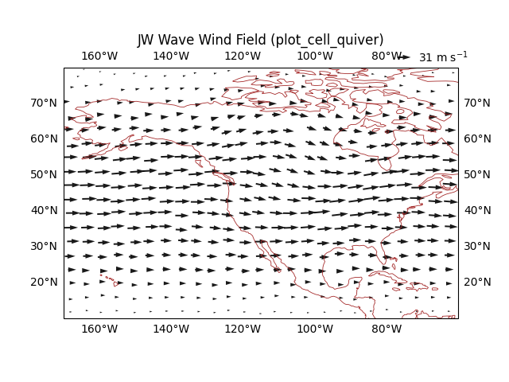
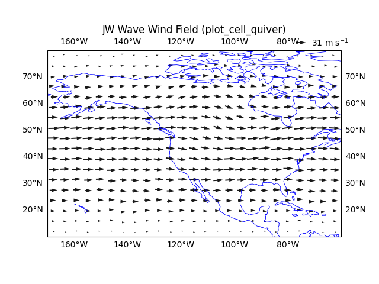
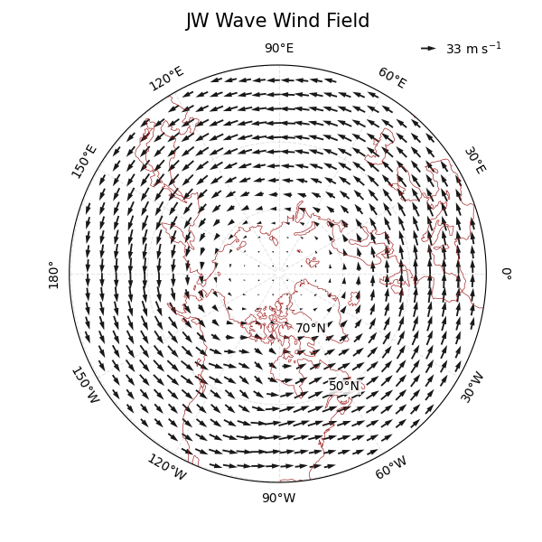

Note
Go to the end to download the full example code.
MPAS Cell-centered quiver plots¶
This example shows how to draw MPAS cell-centered vector winds with
easyclimate.plot.mpas.plot_cell_quiver.
The input zonal and meridional components are one-dimensional variables on
nCells after selecting a time and vertical level. The plotting helper thins
the vectors in longitude-latitude bins before drawing them.
import xarray as xr
import numpy as np
import cartopy.crs as ccrs
import matplotlib.pyplot as plt
import easyclimate as ecl
from easyclimate.plot.mpas import plot_cell_quiver
Open MPAS output and select a horizontal wind field on cell centers.
data = ecl.open_tutorial_dataset("mpas_JWwave_T10_nVertLevels10")
U = data.uReconstructZonal
V = data.uReconstructMeridional
Draw a regional quiver plot. thin_method="nearest_center" keeps the vector
closest to each bin center, which preserves sampled MPAS values.
fig, ax = plt.subplots(subplot_kw= {"projection": ccrs.PlateCarree(-120)})
cq = plot_cell_quiver(
data,
U,
V,
lon_min=190,
lon_max=-60,
lat_min=10,
lat_max=80,
nx_bins=25,
ny_bins=18,
thin_method="nearest_center",
scale=900,
width = 0.004,
headaxislength = 5,
)
ax.set_title("JW Wave Wind Field (plot_cell_quiver)")
ax.coastlines(resolution="110m", linewidth=0.6, color = "brown")
ax.gridlines(draw_labels=True, alpha = 0)

<cartopy.mpl.gridliner.Gridliner object at 0x7f77d216bbd0>
thin_method="mean" averages vectors within each bin. This is useful when a
smoother regional wind depiction is desired.
fig, ax = plt.subplots(subplot_kw= {"projection": ccrs.PlateCarree(-120)})
cq = plot_cell_quiver(
data,
U,
V,
lon_min=190,
lon_max=-60,
lat_min=10,
lat_max=80,
nx_bins=25,
ny_bins=18,
thin_method="mean",
scale=900,
width = 0.004,
headaxislength = 5,
)
ax.set_title("JW Wave Wind Field (plot_cell_quiver)")
ax.coastlines(resolution="110m", linewidth=0.6, color = "b")
ax.gridlines(draw_labels=True, alpha = 0)

<cartopy.mpl.gridliner.Gridliner object at 0x7f77c1fb29d0>
For polar projections, regrid_shape lets Cartopy place vectors on the map
projection grid before drawing.
fig, ax = plt.subplots(
figsize = (6, 6),
subplot_kw={"projection": ccrs.NorthPolarStereo(central_longitude=-90)}
)
ax.coastlines(color="brown", linewidths=0.5)
cq = plot_cell_quiver(
data,
U,
V,
lon_min=0,
lon_max=360,
lat_min=30,
lat_max=90,
nx_bins=80,
ny_bins=18,
thin_method="nearest_center",
title="",
scale=900,
regrid_shape = 30,
width = 0.004,
headaxislength = 5,
)
gl, meta = ecl.plot.draw_polar_basemap(
ax = ax,
lon_step=30,
lat_step=20,
lat_range=[30, 90],
draw_labels=True,
gridlines_kwargs={"color": "grey", "alpha": 0.2, "linestyle": "--"},
lat_label_lon=-60
)
ecl.plot.set_polar_title("JW Wave Wind Field", meta, size = 15)

Text(0.5, 1.0831890201695809, 'JW Wave Wind Field')
Total running time of the script: (0 minutes 2.571 seconds)